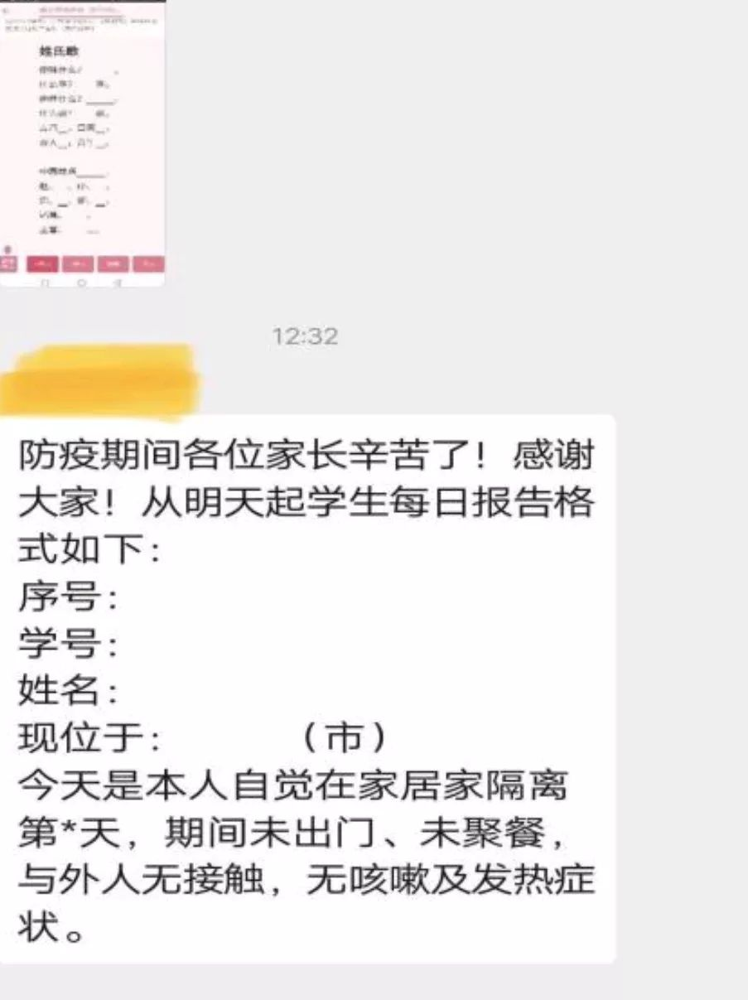

肺炎疫情下的武汉高考生：节前紧急停课 节后教师排班在线授课 鼓励自主学习 - 经济观察网 － 专业财经新闻网站
原文链接 备份链接 经济观察网 记者 万敏 准备好教案，调试好QQ，等待开课——林老师从来没想到，会以这样的方式，带领学生向着高考冲刺。 林老师是湖北省武汉市一所重点中学的高三年级任课老师、班主任。从1月30日（农历正月初六）开始，她和其 …

“

- 疫 情 之 下 -
她不会要求她的学生们将来必须成为医务工作者、科学家、警察、建筑工、老师，但她一定会要求自己的学生，好好学习，将来一定要用自己所学、所知、所拥有的知识和技能守护好那些曾经守护过他们的人。
”
1
张明亮已经24天没有见到她的43名学生了。
1月17号，看着自己的学生领完各种奖状、寒假作业，开开心心跟着自己的家长回家的那一刻，张明亮的心情是轻松、愉快、喜悦的。
这批刚从幼儿园走进小学课堂里的孩子，经过一学期的教育和培养，都已经成长和进步了许多。像43株幼苗一样，一个个争相破土发芽，长势喜人。按照盐城市教育局和学校的原计划，她将会在2月10号再次见到孩子们，继续带领着他们一起成长。
意外来得很快。
“武汉不明肺炎”的新闻传播的越来越广，已经沉浸在迎接新年的喜庆氛围里的张明亮也察觉出了形势的严峻。1月23号，学校官微正式推送了《预防新型冠状病毒告家长书，速度转给家长！》的文章。那一刻，包括张明亮在内的全体老师都有了一个新的任务：保护好别人家的孩子。
学校要求抗疫期间的各项工作必须做到“班班到位，生生到位”。按照学校的统一部署和安排，张明亮开始负责一（1）班43名学生的健康管护。
首先要让所有的家长意识要此次肺炎危机的严重性。寒假时段，家长们都忙着带自己的孩子走亲访友、出门旅游。要在最短的时间内，让他们把自己的孩子监管在家里才行。
学校开始不定期推送各种告家长书以及新型冠状病毒的相关知识。张明亮第一时间建群，开始正常排查和登记，每天统计孩子的健康状况、出行状况，并且要求孩子居家隔离至少14天。这期间，还要在群里不定期的推送疫情相关科普知识。

原本沉浸在新春佳节喜庆氛围里的家长们，起初并没有意识到问题的严重性。很多家长在私底下都有学校和老师是在“小题大做”的感慨。但在张明亮的严谨、严格的管护要求下，他们也逐渐地意识到疫情的危害性和严峻性。
一个和你孩子不相干的外人，每天都要求作为父母的你，上报自己孩子的健康状况。一天可以没有感想，两个星期就不可能没有想法了。在很多父母眼里，原本孩子感冒、发热、留个鼻涕是正常不过的小事。现在，他们也开始小心翼翼地留意起自己孩子的一举一动，生怕他们有一点不舒服。
家长们开始和张明亮一起齐心协力保护起孩子们。
因为，有全体家长们的积极配合，张明亮对43名孩子每天的状况一清二楚。此前，为了不错漏任何信息，她的手机是24小时不关机、不静音的。
虽然，学校和老师的管护工作一丝不苟，但外面的疫情形势依然越来越严峻。
2
1月27号，盐城市教育局正式发出2020年春季学期延迟开学公告。原定的2月10号开学日期延期为2月17号。
前仆后继的医务工作者、警察、工人、科研人员、志愿者都奔向了抗疫战争的前线，他们都在极尽所能的用自己的知识和技能为全国人民筑起一道守卫长城。张明亮所供职的，在后方的学校没有掉下队伍，也及时打出了“‘延假不停学，学习不延期’——后方我们在行动”的口号。
作为一名老师，此时的张明亮又面临了一个新的挑战：启动网络学习。准备电子教材、备课，发布上课时间表，督促家长们下载教材，了解上课平台以及提交作业渠道。2月10号正式开课前，她必须将这些工作准备完毕。
这也是张明亮从业以来，第一次挑战网络授课。
学校的组织和分工很明确。要求老师们团队合作，开展集体备课并且在两周内形成成熟教案。学校不仅布置了教学任务，也明确规定了开学后会组织相关科室对老师们的教研工作进行检查。
也就是说，学校不仅要求老师们在两周内保证网络教学计划按期实行，还要确保教学质量。
因为延期开学，张明亮必须继续管护每个学生居家不出门，现在还要逐一统计每个学生家中成员的出行情况，填写相关调查表。她在继续进行正常排查和登记工作的同时，又要开始和同事们一起备课。
原本就没有闲暇时间的张明亮更加忙碌起来。她甚至有点紧张。并不是因为工作任务的紧凑，而是因为她不确定网络授课的效果；也不确定自己能否胜任一个优秀的网络授课老师；更不确定的是，隔着屏幕，她有没有办法像以往那样及时观察和捕捉到每一个孩子的反应。
孩子们真的听得进去吗？他们会开小差吗？现在靠张明亮一个人是掌控不了了。还得有家长们的监督，孩子们的自律才行。
备课时，张明亮忽然有种想把自己掌握的所有知识一下子都教给学生们的冲动。她很想让自己的学生在短时间内学到知识，快速进步。希冀小幼苗在一夜之间长成参天大树，是多么不切实际的幻想。深知教育规律的她，明白自己有了拔苗助长的心态。这在以往的教学过程中是从没出现过的情况。可是，此时，此刻，她真真切切地希望自己的学生能够一步登天。
2月6号，江苏省政府发布延迟开学通告，全省2月底前不得开学。这个通告让原本就紧张的张明亮更加焦虑起来。
这就意味着，到3月初，她才有可能见到自己的学生们。在这之前，他们还是必须依靠网络进行沟通、交流、授课、答疑解惑。一方面，她既为孩子们可以继续居家隔离得到严格的管护而高兴；另一方面，她又为孩子们的学习成长忧心忡忡。
张明亮的学生才一年级，弥补、修正的机会还有很多，此时的她就已经有了教学计划和节奏被打乱的局促和担忧。那些正负责着小升初、初升高、高升大学关键学点的老师们的处境就更是可想而知了。老师教学就像割韭菜，这一茬割完，可以继续割下一刀，可是绝大数的学生只有这一次的机会。
还是和个人命运息息相关的人生机会。
3
“离校不离教，停课不停学”。2月10号，网络授课如期进行。早读，课堂作业，课后作业该有的环节一个都不少。
因为，前期准备工作充分，全班学生都在规定的时间内，准时进入了网络学习课堂。甚至比以往在教室里进入上课状态还及时。课程进行的很顺利，这让原本一直处于紧张状态的张明亮松了口气。
课程结束后，张明亮在群里逐一核对检查，确保每个学生完成了当节的学习任务。现在，她还不能掌握每个学生的学习吸收的程度，但至少要保证每个学生完成了规定的学习任务。至于如何能够隔着屏幕督促教育好每个学生，将是她在这之后工作和研究的重点。
网络授课的日子还将持续些时日。这些日子里，张明亮相信每个教育一线工作者都将怀着忐忑不安的心情度过。该学的学了吗？该懂得懂了吗？该掌握的掌握了吗？和学校的教学质量区别大吗？他们不仅要担心自己的孩子，更多的忐忑是因为别人家的孩子。而作为老师的她必须时刻调整自己，以确保自己一直处于良好的状态，带领着家长们、孩子们一起接受各种新的、未知的挑战。
张明亮的抗疫工作还在继续。
短短的二十几天，疫情就让她和43个家庭紧密联系在一起，也让她看到了很多往常看不到的令人啼笑皆非又感慨良多的点点滴滴。
一个平常很调皮，上课不安分，下个铃一响就往外跑的小男孩，在自己和家长不停地灌输外面病毒的危害性以及居家隔离必要性后，在他的妈妈正常开窗通风期间，就一个激灵地跳到离窗户最远的角落里，嘴里还嚷嚷：“妈妈，你开啥窗户，病毒都给你放进来了。”
一个同行在群里通知家长们看好自己的孩子时，不顾为人师表的形象，用出了“恐吓”和“威胁”的口气：“同时强调这十四天期间如果督察组发现有小孩在外面，要追究当事人和监督人的法律责任，请看好孩子。”

很多原本一到放假就处于放飞状态的孩子，自从疫情发生后，就自觉地在家看书、学习起来。据说比在学校时都认真。这让家长和老师多多少少有些欣慰。
还有一个喜欢看各种动漫卡通的小姑娘，以往崇拜的都是各种魔法卡通人物形象。在家期间，忽然也开始念叨起“钟南山”这三个字。这个爷爷不会变魔法，只是一个医生，她也并不清楚这个人具体是做什么的，但铺天盖地的新闻和信息，让她懂得了将“英雄”这两个字和这个人联系在了一起。
最让人动容的是，听说一个人家的孩子，在疫情初期，所有人都认为中老年人更容易感染，年轻人和小孩不容易感染时，主动不让自己奶奶出门买菜，自告奋勇代替奶奶出门。在一家三口全副武装去超市买菜的路上，这个孩子紧紧地挽着自己爸爸和妈妈的胳膊说了句：“爸爸，妈妈我爱您。”她其实是担心自己染病，也担心自己父母染病的。
她的父母为之感动了许久。隔着屏幕，听说此事的张明亮也是如此。
疫情面前，没有一个侥幸和旁观的人。每个人的生活都受到了不同程度的威胁和影响。学生这个群体在第一时间就得到了格外的关注和守护。所有人都在想方设法的将疫情对学生这个群体的影响降到最低，不遗余力在第一时间为他们创造力所能及的健康、安全、可靠的生活、学习、成长环境和氛围。
要保护他们的安全和健康，还要保证他们的学习和成长。
老师定点负责管护学生，延迟开学时间，改变教学模式，第一时间组织备课，开展研讨，教育系统安排名师录制免费在线课程，有线、移动公司提供技术支持。
这些在后方抗疫的人们，不遗余力地用自己的力量守护着千家万户的孩子。
因为，孩子代表着一个家庭、一个民族以及一个国家的希望。有希望，才会生生不息。绿水长流，千山依旧。
张明亮的学生们还很小，他们很多人只知道外面有病毒不能出门，必须在家学习。他们绝大多数人还不能够明白外面的疫情有多严重，疫区的生活有多紧张、危险和艰苦，整个国家和社会因为疫情受到了多大的重创。甚至，也许一些孩子还在为不能出门和同学玩耍而感到沮丧和抱怨。
这时，张明亮就会庆幸自己是一位老师，一位教育工作者。
张明亮已经想好了，等到她和孩子们再次面对面的站到同一个教室里时，她要告诉她的孩子们，是医务工作者、科学家、警察、建筑工、老师、社区工作人员等，用自己的知识和技能一起携手战胜了病毒，才让他们可以重新肆无忌惮地走出门，走到太阳底下，走进教室里高高兴兴地学习和成长。
她不会要求她的学生们将来必须成为医务工作者、科学家、警察、建筑工、老师，但她一定会要求自己的学生，好好学习，将来一定要用自己所学、所知、所拥有的知识和技能守护好那些曾经守护过他们的人。
张明亮期待这样的时刻早日来临。
☆张明亮老师系化名
-END-
- 写 作 之 星 -
// 一辈子不长，努力做个有故事的人。//
作者 | 丁家幺女，青年作者。
题图|《小欢喜》剧照
“我故”故事练习生培养计划，详情请戳：

About us
主编：鹿｜本期编辑：鹿
Contact us
投稿/商务合作/咨询
微信后台留言 or 邮箱：wmsygsdr@163.com
**我们是有故事的人｜华中科技大学出版社官方故事平台**
原文链接 备份链接 经济观察网 记者 万敏 准备好教案，调试好QQ，等待开课——林老师从来没想到，会以这样的方式，带领学生向着高考冲刺。 林老师是湖北省武汉市一所重点中学的高三年级任课老师、班主任。从1月30日（农历正月初六）开始，她和其 …
原文链接 备份链接 此前，这里被丢满了学生们的盒子、袋子等物品，现在已经清理干净。（王伟凯/摄） 全文共2865字，阅读大约需要7分钟。 武软的学生宿舍大都没有电梯，如果将物资统一搬运到楼下，时间和人力上都无法保障。于是，学校个别教职 …
原文链接 备份链接 澎湃新闻记者 汤琪 发自武汉 武汉一所市属高校，近日卷入了一场舆论风波。 2月7日中午11时许，位于武汉市东湖高新区的武汉软件工程职业学院接到紧急通知，学校需腾出1000间学生宿舍，作为新型冠状肺炎病毒（以下简称“新冠 …
原文链接 备份链接 2 月初的深圳，公园里的花朵已经开得起劲。与往年不同的是，受着新冠病毒疫情影响，街上行人骤减，且多沉默不语。但在今天的来信人陶粲明看来，尽管疫情形势严峻，但是城市中的人们仍在利用有限的机会，彼此传递温暖。 所有的包括 …
原文链接 备份链接 有武汉人滞留在外地，就有外地人滞留在武汉。 1月23日凌晨，武汉宣布封城。 2月10日，湖北省以外的地区陆续开工，这让滞留在武汉的人更希望知道出城的日期。 恰值人口高峰流动期，没有数据统计滞留在武汉的人到底有多少。但各 …